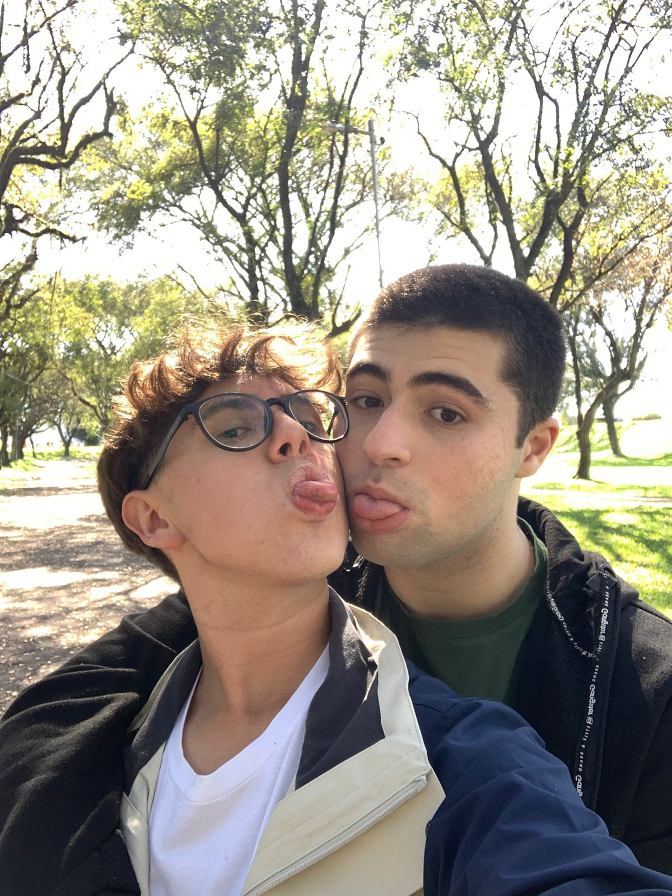

A terceira estante vai ser sobre como conseguimos estabilizar nossa resistência sem contato
Bem skskksksks, a terceira estante da nossa biblioteca vai ser um registro de todas fases que passamos desde que tu ficou sem teu celular, acho que as vezes a gente esquece quanta coisa a gente passou junto, então essa página vai servir pra nos lembrar de cada etapa
Estágios da revolução:
*O primeiro estágio foi conversa pelo celular das tuas amigas, faziamos uma ligação por dia ao fim das tuas aulas.
*O segundo estágio foi depois de um susto que teus pais nos deram, então ao invés de fazermos ligações, escrevíamos uma carta por dia e mandavamos de visu única.
*Logo após isso começamos a tentar contato pelo teu computador, a primeira tentativa foi por meio de mensagens criptografadas com cifra césar no site "pensador".
*O metodo pelo pensador falhou rapidamente, mas conseguimos combinar por meio das tuas amigas uma forma de contato criptografada, usando nossa chave secreta postávamos cartas no wattpad.
*Porém o tempo foi passando e passamos a querer uma forma de conversa mais imediata, não via cartas, então fizemos um experimento pelo canva, onde tu criou um design com um quadrado verde e um laranja, pra cada um de nós.
*Dito isso, o canva ainda era meio exaustivo e não era tão seguro, então após uma conversa tu foi até o chatGPT e descobriu um site para "resistências", o riseup skskskkssk, que é o que usamos até hoje.
Atualmente conseguimos falar bastante todos os dias, além disso achamos um site para fazermos nossas chamadas de vídeo. A vida está longe de perfeita, mas nesse mundo de neve, conseguimos montar nosso cantinho com uma fogueira para ficarmos juntos.
